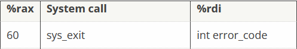
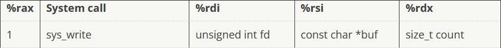
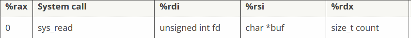

Assembly x86¶
You can access this game at https://tracer.kringlecastle.com/.
The first thing you are going to see is an introduction page. After having read it, we can proceed to Level 1. Just so you know, there are 11 levels.
The debugger is really useful to understand the code in this case, so please use it!
Level 1 - Introduction¶
This level is actually already completed. It is here so we can understand the basics of Assembly x86
Use mov RegisterName, Value to set a value into a register. Registers have specific names that we will see in the next levels. (Level 4)
mov rax, 0
Use push Value to send a value at the top of the stack.
Use pop RegisterName to set the register to the value at the top of the stack.
You can see the contents of the stack for each instruction in the debugger.
mov rax, 0 ; rax = 0
push 10
pop rax ; rax = 10
ret
Level 2 - Loops¶
This level is again already completed. It introduces loops.
It is already pretty well-described, so we’ll pass over.
Level 3 - The Actual Start¶
Now that we have seen some examples, it’s time to write a few lines line of code.
We have to return
ret
That’s it!
Level 4 - Return a Value¶
We have to return a value (1337).
To do that, we set rax to 1337. Usually, ret will return the value contained in rax.
mov rax, 1337
ret
Level 5 - Syscalls¶
This time we have to perform a syscall to end this process. The exit code for sys_exit is 99, so we have to set rdi to 99, like the Table says.

rax = 60 (sys_call number)
rdi = 99 (Given by exercise; we can specify the error code it outputs).
Here you go.
mov rax, 60 ; set rax to 60
mov rdi, 99 ; set rdi to 99
syscall ; perform the syscall
Level 6 - Crash on Puropse¶
Here we learn how to make the program crash. Well…who knows? It might be useful somehow.
Level 7 - Get RIP¶
We can use the call function to skip certain parts of code, and the return address of the memory cell is stored on top of the stack. it can then be used to access certain values that can’t normally be reached.
This is the solution.
; Remember, this call pushes the return address to the stack
call place_below_the_nop
; This is where the function *thinks* it is supposed to return
nop
; This is a 'label' - as far as the call knows, this is the start of a function
place_below_the_nop:
; TODO: Pop the top of the stack into rax
pop rax
; Return from our code, as in previous levels
ret
When we call place_below_the_nop, the program skips directly to place_below_the_nop:. It skips nop and puts the return address at the top of the stack. By using pop we can put the address into rax, and return it!
Level 8 - Hello World¶
We have to apply what we learned in the previous level.
; This would be a good place for a call
call test
db 'Hello World',0
; This is the literal string 'Hello World', null terminated, as code. Except
; it'll crash if it actually tries to run, so we'd better jump over it!
test:
; This would be a good place for a label and a pop
pop rax
; This would be a good place for a re... oh wait, it's already here. Hooray!
ret
We use call test (or whatever name you want!) to skip below db 'Hello World',0, which can’t be executed. When the call happens, the memory address of the string is put at the top of the stack, an by using pop and setting rax to it, we can return the string!
Level 9 - Bigger Hello World¶
We have to do the same thing we did in the last level, but instead of returning the string, we need to print it in stdout, using the syscall sys_write. Let’s see it in the syscall table.

rax = 1 (sys_call number)
rdi = 1 (file descriptor number, given to us by the exercise, because
stdouthas file descriptor 1)rsi = string address, so we have to
pop rsirdx = 16 (string lenght in bytes. Just count the characters!)
Ok, now let’s import that in the code!
; TODO: Get a reference to this string into the correct register
call test
db 'Hello World!',0
test:
; Set up a call to sys_write
; TODO: Set rax to the correct syscall number for sys_write
mov rax, 1
; TODO: Set rdi to the first argument (the file descriptor, 1)
mov rdi, 1
; TODO: Set rsi to the second argument (buf - this is the "Hello World" string)
pop rsi
; TODO: Set rdx to the third argument (length of the string, in bytes)
mov rdx, 12
; Perform the syscall
syscall
; Return cleanly
ret
It works!
Level 10 - Open a File¶
Here we learn about a new syscall, sys_open. Let’s get the table reference to it.

rax = 2 (sys_call number)
rdi = file address, so we have to
pop rdirsi = 0 (Flags)(Given by exercise)
rdx = 0 (Mode)(Given by exercise)
; TODO: Get a reference to this string into the correct register
call skip
db '/etc/passwd',0
skip:
; Set up a call to sys_open
; TODO: Set rax to the correct syscall number
mov rax, 2
; TODO: Set rdi to the first argument (the filename)
pop rdi
; TODO: Set rsi to the second argument (flags - 0 is fine)
mov rsi, 0
; TODO: Set rdx to the third argument (mode - 0 is also fine)
mov rdx, 0
; Perform the syscall
syscall
; syscall sets rax to the file handle, so to return the file handle we don't
; need to do anything else!
ret
Ok. We have now a handle to the opened file!
Note
Like the comment in the code says, sys_open returns the file handle in rax. We will need this later!
Level 11 - A Full Program¶
This is the final step, “the grand finale”. We have to assemble what we learned from past levels to open a file, read it and write it’s contents to stdout.
Let’s get the sys_read entry in the syscall table.

rdi = file handle (
rax)rax = 0 (sys_call number)
rsi =
rsp(buffer; will be used bysys_writeto print them)rdx = 400 (contents lenght; we put a big value to avoid overflows!)
Attention
sys_read must be called only after calling sys_read. sys_read returns the file handle in rax.
This means we have to set rdi to rax before setting rax to 0!
Remember: you can’t read a file if you haven’t opened it :)
And now it’s time to setup sys_write, to print our flag
rax = 1 (sys_call number)
rdi = 1 (file descriptor,
stdout)rsi =
rsp(where the call reads from. It is avoidable sincersiis already equal torsp)rdx = 400 (buffer; we still put a big number to avoid overflows)
And then the last syscall, sys_exit
rax = 60 (sys_call number)
rsi = 0 (error code; no specific value necessary, but since there are no errors, we shout put that equal to
0)
We can now bake all of our syscalls in the final code
; TODO: Get a reference to this
call skip
db '/var/northpolesecrets.txt',0
skip:
; TODO: Call sys_open
mov rax, 2
pop rdi
mov rsi, 0
mov rdx, 0
syscall
; TODO: Call sys_read on the file handle and read it into rsp
mov rdi, rax
mov rax, 0
mov rsi, rsp
mov rdx, 400
syscall
; TODO: Call sys_write to write the contents from rsp to stdout (1)
mov rax, 1
mov rdi, 1
;mov rsi, rsp ; avoidable
mov rdx, 400
syscall
; TODO: Call sys_exit
mov rax, 60
mov rsi, 0
syscall
And if we execute and open the debug window, in the upper-left corner we see the standard output:
Secret to KringleCon success: all of our speakers and organizers, providing the gift of cyber security knowledge, free to the community.
so… the magical phrase is cyber security knowledge.
That’s all. Thank you for reading!